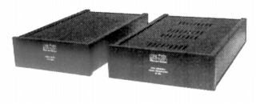

No.25L

■価格
550,000円(530,000円)
■フォノイコライザーアンプ
■入力インピーダンス 825Ω(47kΩ
)
■出力レベル/負荷インピーダンス 最大6V
■利得 58,64dB切替（38,44dB切替）
■最大許容入力
■周波数帯域
■入力換算雑音
■チャンネルセパレーション
■消費電力
■電源
■重量 3.0kg
■寸法 W19.3×H7.85×D33.3cm
■発売
1988年10月
■販売終了 1993〜94年頃
■備考 価格は1988年頃のもの
1990年頃は520,000円(MM
500,000円)(カードなし 340,000円)
1993年頃は560,000円(MM 同価格、カードなしのバージョンは不明)
MCフォノカード付きのもののスペック。
（
）内はMMフォノカード付きのもののスペック。
フォノカードなし\360,000円)の販売もあり。
電源は基本的にプリのNo.26L用電源から供給。
単独使用では別売り電源PLS-226L(280,000円)が必要。
詳細は不明だがStereo Sound YEAR
BOOK1999では、
98年の新製品(480,000円)として紹介されている。
YEAR BOOK2000では消えている。
マークレビンソンのインデックスへ